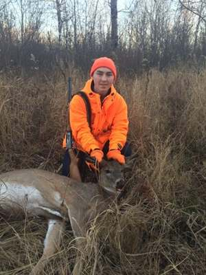
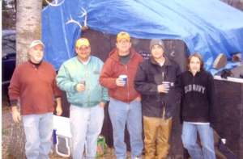
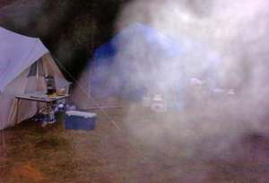
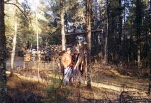
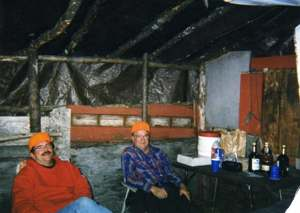

Hunting Log
Every season since the shack was a fence. Tap a year for who saw what, the camp notes and the pictures.
- Seasons
- 25
- Bucks
- 31
- Does
- 18
- 2018
3 Bucks1 Doe
The usual suspects. Only deer was a doe shot by Jeff. Jeff was in his stand on Sunday morning and shot at a doe.0 photos · 9 hunters - 2017
1 Buck0 Does
Jake keeps a day-by-day log of fawns, fawns and more fawns, then drops a buck on Thursday.0 photos · 10 hunters - 2016

2 Bucks1 Doe
Sam gets his first deer from his stand on the wildlife management property.1 photo · 10 hunters - 2015
1 Buck0 Does
Group included Tom, Jeff, Jake, Larry, Ben, Mike, Mitch, Cory, and Matt. Our first hunting season with a heated bathroom. Now we're livin'.0 photos · 10 hunters - 2014

1 Buck0 Does
This is the first year with the new cabin and party shack.13 photos · 9 hunters - 2013
0 Bucks0 Does
This would be the 2nd year in a row that part of the tree that is in front of the shack lost a large limb that crashed through the roof supports of…0 photos · 8 hunters - 2012
1 Buck1 Doe
We got a call that a big limb of the tree in front of the shack fell and broke through the pipes (roof supports) of the shack.0 photos · 10 hunters - 2011
2 Bucks1 Doe
Back in the saddle again - Steve joins the hunting group for the first time since 1995.0 photos · 12 hunters - 2010

2 Bucks1 Doe
Tom finally gets his first deer in Cotton. A six point buck. Don't tell the DNR because he has tagged a deer each of the past 14 years.3 photos · 10 hunters - 2009

2 Bucks3 Does
Cory's first year hunting and quickly received the nickname Karl for his "simpleton ways".21 photos · 9 hunters - 2008

1 Buck0 Does
Collins first year. Tom and Jeff have new stands that were decorated with old Christmas trees. Newby receives his hockey helmet to protect his head.7 photos · 8 hunters - 2007

4 Bucks1 Doe
It is our first year with the generator. Jeff has a new gun. (.270).13 photos · 7 hunters - 2006

1 Buck0 Does
First year with Stinky. (3 in the pink and 4 in the stink...12 photos · 7 hunters - 2005

0 Bucks0 Does
First year at the new land. We meet our neighbor Chuck Young. Ben and Mitch are coming along to see what hunting is all about.9 photos · 7 hunters - 2004

3 Bucks1 Doe
We were forced to move across the road because Potlatch leased out campsite and completely ignores our rights as squatters.7 photos · 6 hunters - 2003

1 Buck1 Doe
Jeff increases the height if his ladder stand to 17 feet. Our outhouse is stolen and a portable one is made. Papa's last year of hunting.2 photos · 7 hunters - 2002
0 Bucks0 Does
Jeff, Larry and Tom take out the bathroom in pinky and add two bunks. It was bitter cold opening morning, 17 degrees below zero.0 photos · 7 hunters - 2001

2 Bucks0 Does
Jeff finally gets his first deer. (In a shade under a decade, I might add). Bitter J.J. is put to rest.5 photos · 7 hunters - 2000

3 Bucks1 Doe
Joe Cox was steeling stands and parking spaces. Uncle Dennis sleeps in his truck and then goes to Rudy's campsite.13 photos · 7 hunters - 1999

0 Bucks1 Doe
Jake's first year hunting. Jeff carried Papa's deer back to camp to gut.2 photos · 6 hunters - 1998
0 Bucks0 Does
"Hop-sing" is born. Jake comes with to see what hunting is all about. He and Tom share a stand.0 photos · 6 hunters - 1997

0 Bucks1 Doe
Tom's first year hunting and he sits in the Pew Stand. Jeff has meetings in Denver that he can't miss.3 photos · 6 hunters - 1996

0 Bucks0 Does
Shooters first year hunting. Shooter gets to his ladder stand near camp only to realize that he forgot his shells.1 photo · 4 hunters - 1995
0 Bucks3 Does
Papa shoots a doe out of Jeff's stand and later takes Larry's stand. Larry goes 40 yards behind him and shoots 2 deer, a doe and a 3 point buck..0 photos · 3 hunters - 1994

1 Buck1 Doe
This is Jeff's first year hunting and Steve's last. Razor, Gordon and Gary visit us in the shack.2 photos · 4 hunters